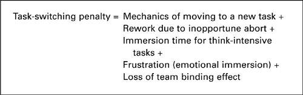

Effect on Teams
Finally, switching may impose another kind of penalty, one that hurts your continuing productivity rather than just costing you a fixed amount of lost time. This occurs in tasks that are performed by people working in tightly knit teams. If you’ve ever worked on such a team, you know that there is a productivity boost due to “binding,” the effect of adherence to a common goal. There is something about a team that energizes and focuses all the participants so that the whole of the team’s capacity is greater than the sum of its parts. But teams tend to be obsessive by nature. A highly partitioned worker can’t be obsessively involved in any of his/her many fragmented tasks, and so tends not to bind into the team. Whatever the productivity boost due to team action may be, the partitioned worker does not benefit from it.
The complete task-switching penalty is thus seen to include all of these components:
